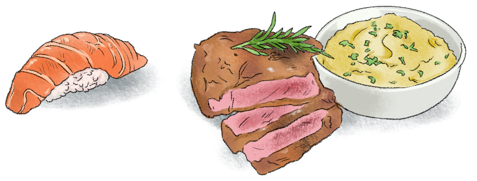

The writer will occasionally find it convenient or necessary to borrow from other languages. Some writers, however, from sheer exuberance or a desire to show off, sprinkle their work liberally with foreign expressions, with no regard for the reader's comfort. It is a bad habit. Write in English.